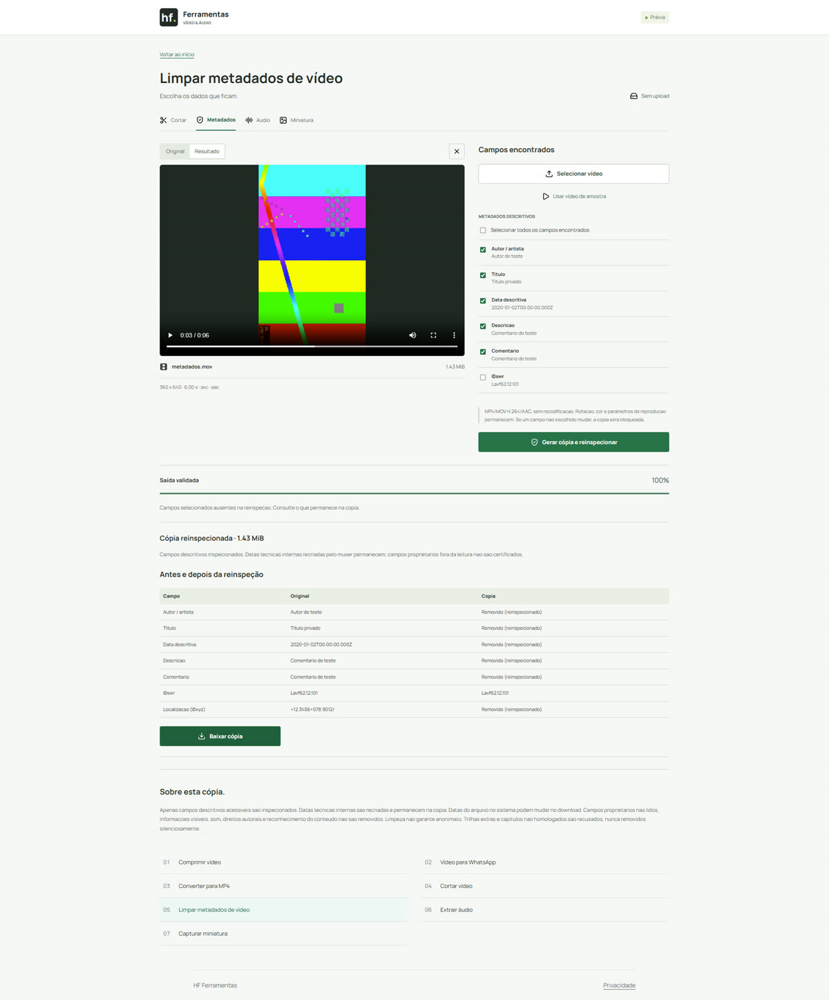

Dados & privacidade
O que os metadados de um vídeo podem revelar
Separe campos descritivos, dados de reprodução e informações visíveis na cena.
Nem todo dado tem o mesmo papel
O arquivo de teste desta ferramenta inclui título, autor, comentário, data descritiva e localização fictícia. Esses campos são diferentes de resolução, codec, cor e rotação, necessários para interpretar a imagem e o som. Uma cópia que apaga informações de reprodução pode ficar errada ou ilegível.
Existe ainda outra camada: o que a gravação mostra e o que as pessoas falam. Uma placa de rua, um crachá ou um endereço dito em voz alta continua no conteúdo mesmo quando um campo descritivo é removido.
Veja o que existe no seu arquivo
- Abra Limpar metadados de vídeo e selecione a gravação.
- Aguarde a análise e leia Campos encontrados. Não marque todos automaticamente: decida quais valores precisam sair.
- Diferencie a data descritiva da gravação de datas técnicas internas ou datas do arquivo no sistema.
- Se quiser continuar, abra o guia de remoção seletiva. Apenas inspecionar não altera o original.
{kind=link}

Uma lista vazia não prova ausência de dados
O leitor apresenta somente campos descritivos que consegue acessar. Um programa diferente pode interpretar campos proprietários que não aparecem aqui. A mensagem Nenhum campo descritivo acessível encontrado não é um certificado de anonimato.
Campos extensos ou numerosos demais geram uma recusa, em vez de uma lista resumida que pareça completa. No teste, aliases conhecidos não duplicaram a mesma informação na seleção; campos desconhecidos acessíveis apareceram separadamente.
Escolha o cuidado proporcional ao destino
Para compartilhar uma lembrança, talvez baste conferir localização e autor. Para um material sensível, também revise o nome do arquivo, os quadros e o áudio. Se a consequência de identificação for grave, não dependa só deste limpador inicial.
A ferramenta trabalha localmente, mas isso não torna o dispositivo ou o destino automaticamente privados. O arquivo baixado pode ser sincronizado por outro aplicativo, e quem recebe pode encaminhá-lo. Inspeção de metadados é uma etapa do cuidado, não toda a proteção.
Escopo da verificação
Procedimentos conferidos nos controles atuais e testes locais do Chrome/Windows. Viewports mobile são emulados; aparelhos físicos e outros navegadores não estão homologados. Exemplos e capturas são do projeto, com amostras sintéticas ou autorizadas, sem dados de visitantes.
Fontes técnicas
Consultadas em 12/09/2026. Resultados numéricos e limites do portal vêm dos testes locais, não de uma garantia das fontes.